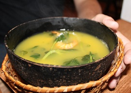

Culianaria Tipica do Amazonas
A culinária do Estado do Amazonas, dentre as outras do Brasil, foi uma das que mais conservaram suas origens indígenas, com pouca influência portuguesa ou africana. Por ser uma das culinárias mais exóticas do país, a gastronomia amazonense exerce influência no Brasil e no mundo.
O Amazonas é o maior estado do Brasil em extensão territorial, sendo cortado por rios gigantes que abrigam mais de duas mil espécies de peixes. Por essa razão, a culinária amazonense valoriza, sobretudo, o pescado. Os principais peixes consumidos são o pirarucu, o tambaqui o tucunaré, o pacu e o jaraqui. É comum também o consumo da carne de tartaruga, entre os habitantes ribeirinhos mais antigos, era consumido a carne do peixe-boi amazônico, proibida pelos órgãos ambientais do Brasil devido a caça predatória.
Caldo de Tambaqui
Feito com um dos peixes mais comuns na região, esse caldo é uma das receitas típicas e em sua produção leva o tucupi. O caldo é temperado com sal, pimenta e um toque de limão, além de ervas locais.
Ingredientes
1 tambaqui fresco limpo sem escamas e cortado em pedaços
1 limão médio
1 colher se sopa de sal
2 tabletes de caldo de galinha
2 cebolas médias picadas
2 tomates médios picados
5 pimentas de cheiro picadas (se tiver na sua região se não substitua por outra de sua preferência)
1 pimentão picado
Cheiro verde
Coentro
Salsa a gosto
Óleo de soja
1 lata ou caixa de extrato de tomate
Água
Modo de Preparo
Em uma bacia depois de lavar bem em água corrente o tambaqui, coloque o sal e esprema o limão por cima, misture bem e reserve enquanto corta as verduras, é o tempo ideal para o peixe aderir o tempero.
Em uma panela coloque um pouco de óleo de soja, esquete um pouco e em seguida acrescente a cebola, o pimentão, o tomate, as pimentas e o caldo de galinha.
Misture tudo por alguns minutos e acrescente o extrato de tomate, em seguida coloque o peixe na panela.
Adicione água suficiente para cobrir completamente os pedaços de peixe, deixe cozinhar por uns 20 minutos.
Depois de apagar o fogo, jogue por cima o cheiro-verde, a salsinha e o coentro a gosto. Rende bastante e fica uma delícia.